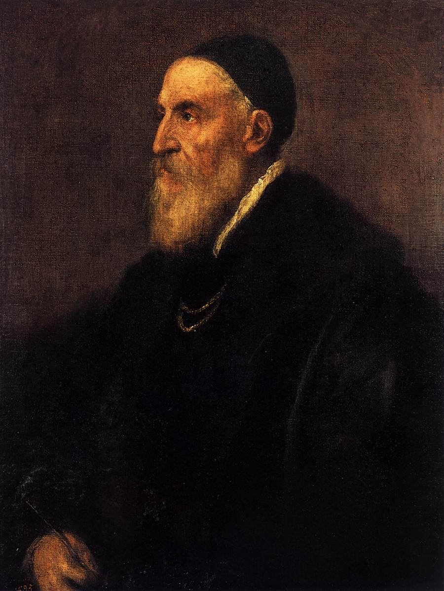

Tiziano VecellioPieve di Cadore, 1480/1485Venezia, 27 agosto 1576  Tiziano veramente è stato il più eccellente di quanti hanno dipinto: poiché i suoi pennelli sempre partorivano espressioni di vita Nato a Pieve, in provincia di Belluno, fra le montagne del Cadore, tra il 1488 e il 1490, Tiziano Vecellio appartiene ad un'antica famiglia del piccolo centro alpino. Uomo estroverso, instancabile lavoratore, Tiziano attende alle sue opere senza mai avere sosta. La sua carriera è trionfale, la vita di lunga durata, se è vero che la morte sopraggiunge quando il pittore ha già da un po' superato l'incredibile età di ottant'anni. Ancora molto giovane, egli abbandona la "magnifica comunità cadorina" per ricevere un'adeguata istruzione pittorica. Giunge così a Venezia, ove i sui primi maestri sono Gentile e Giovanni Bellini. Tra il 1508 e il 1509, è al fianco del pittore Giorgione nella realizzazione del Fondaco dei Tedeschi. Solo un anno più tardi, la sua fama è già consolidata e riceve commissioni importanti, quali la Pala di san Marco e di Santa Maria della Salute. Nel 1511 affresca la Scuola del Santo a Padova. Ottenuta dal Consiglio dei Dieci una rendita ufficiale, destinata ai pittori migliori, nel 1533 diventa pittore ufficiale della Repubblica di Venezia. La sua attività è frenetica: egli accetta molte commissioni da parte della nobiltà contemporanea, realizzando parecchie opere a soggetto profano. Nel 1516 Alfonso I d'Este richiede i suoi servigi e nel 1518 gli commissiona la decorazione del "camerino d'alabastro". Tra il 1519 e il 1526 dipinge la Pala Pesaro per i Frari, e il Polittico Averoldi per la chiesa bresciana dei Santi Nazaro e Celso. Ormai osannato come il più celebre pittore del tempo, Tiziano è conteso tra le corti italiane: lavora a Mantova per i Gonzaga e ad Urbino per i duchi. Nel 1542 ha inizio la sua collaborazione con papa Paolo III e con la sua famiglia; ben presto si trasferisce a Roma e qui rimane fino al 1546. Nel contempo, la sua apprezzata attività di ritrattista procede ed egli ha l'occasione di ritrarre Carlo V durante la sua incoronazione nel 1530. L'imperatore e suo figlio Filippo II, futuro re di Spagna, ne fanno il loro pittore prediletto. Tiziano lavora per anni al servizio della famiglia asburgica. Muore il 27 agosto del 1576, mentre infuria la peste, lasciando incompiuta l'opera che avrebbe desiderato venisse posta sulla sua tomba: la "Pietà". |
| Barbiero Leonardo
Designer & Biografia leonardo.barbiero@gmail.com |
Bottin Marco
Contenuti & Revisione bottin.marco@gmail.com |
Accessibilità
 Validato CSS3
Validato CSS3
|